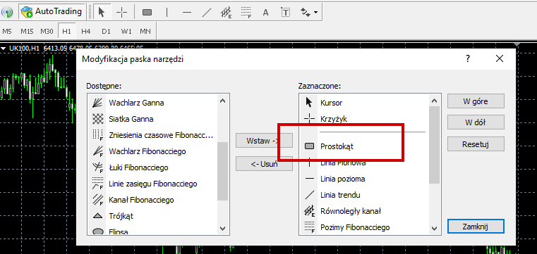
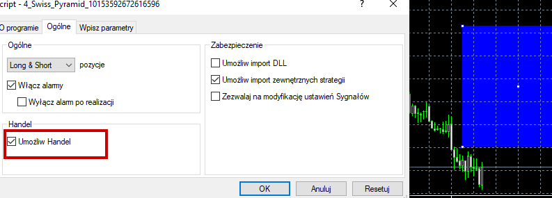
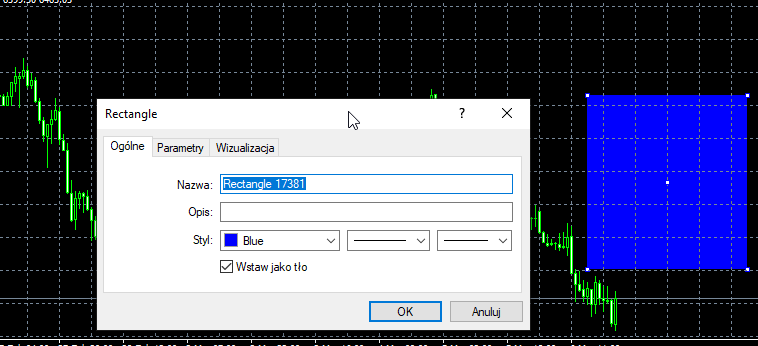
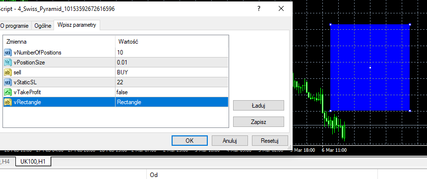
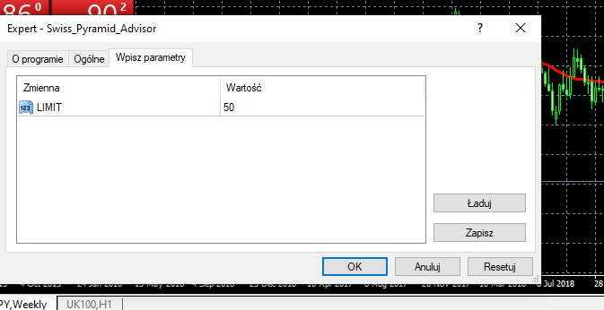

Dodanie elementu prostokata do menu
wlaczenie umozliwienia handlu
po dodaniu prostokata wycinamy numer na koncu lub kopiujemy nazwe do schowka
Piramidy mozna definiowac w dwie strony BUY/SELL, nazwa prostokata musi sie zgadzac z nazwa w formatce
Wrzuca sie go do katalogu Experts, po "umożliwieniu handlu" wystarczy podac kwote po jakiej wycinana jest piramida, przykładowo dajemy 100, to jeżeli suma wszystkich otwartych pozycji wyniesie -100 skrpyt automatycznie wytnie wszystko z danej pary walutowej badz indeksu.
